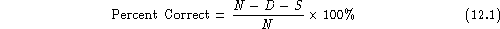
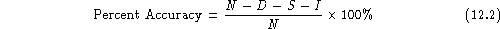
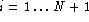
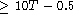

Once the test data has been processed by the recogniser, the next step is to
analyse the results. The tool
HRESULTS is provided for this purpose. HRESULTS compares
the transcriptions output by HVITE with the original reference
transcriptions and then outputs various statistics. HRESULTS matches
each of the recognised and reference label sequences by performing an optimal
string match using dynamic programming. Except when
scoring word-spotter output as described later, it does not take any notice of
any boundary timing information stored in the files being compared. The
optimal string match works by calculating a score for the match with respect to
the reference such that identical labels match with score 0, a label insertion
carries a score of 7, a deletion carries a score of 7 and a substitution
carries a score of 10 . The optimal
string match is the label alignment which has the lowest possible score.
. The optimal
string match is the label alignment which has the lowest possible score.
Once the optimal alignment has been found, the number of substitution errors (S), deletion errors (D) and insertion errors (I) can be calculated. The percentage correct is then

where N is the total number of labels in the reference transcriptions. Notice that this measure ignores insertion errors. For many purposes, the percentage accuracy defined as

is a more representative figure of recogniser performance .
HRESULTS outputs both of the above measures. As with all HTK tools it can process individual label files and files stored in MLFs. Here the examples will assume that both reference and test transcriptions are stored in MLFs.
As an example of use, suppose that the MLF results contains recogniser output transcriptions, refs contains the corresponding reference transcriptions and wlist contains a list of all labels appearing in these files. Then typing the command
HResults -I refs wlist resultswould generate something like the following
====================== HTK Results Analysis =======================
Date: Sat Sep 2 14:14:22 1995
Ref : refs
Rec : results
------------------------ Overall Results --------------------------
SENT: %Correct=98.50 [H=197, S=3, N=200]
WORD: %Corr=99.77, Acc=99.65 [H=853, D=1, S=1, I=1, N=855]
===================================================================
The first part shows the date and the names of the files being used.
The line labelled SENT shows the total number of
complete sentences which were recognised correctly. The second line
labelled WORD
gives the
recognition statistics for the individual words.
It is often useful to visually inspect the recognition errors . Setting the -t option causes aligned test and reference transcriptions to be output for all sentences containing errors. For example, a typical output might be
Aligned transcription: testf9.lab vs testf9.rec LAB: FOUR SEVEN NINE THREE REC: FOUR OH SEVEN FIVE THREEhere an ``oh'' has been inserted by the recogniser and ``nine'' has been recognised as ``five''
If preferred, results output can be formatted in an identical manner to NIST scoring software by setting the -h option. For example, the results given above would appear as follows in NIST format
,-------------------------------------------------------------. | HTK Results Analysis at Sat Sep 2 14:42:06 1995 | | Ref: refs | | Rec: results | |=============================================================| | # Snt | Corr Sub Del Ins Err S. Err | |-------------------------------------------------------------| | Sum/Avg | 200 | 99.77 0.12 0.12 0.12 0.35 1.50 | `-------------------------------------------------------------'
When computing recognition results it is sometimes inappropriate to distinguish certain labels. For example, to assess a digit recogniser used for voice dialling it might be required to treat the alternative vocabulary items ``oh'' and ``zero'' as being equivalent. This can be done by making them equivalent using the -e option, that is
HResults -e ZERO OH .....If a label is equated to the special label
???, then it
is ignored. Hence, for example, if the recognition output had
silence marked by SIL, the setting the option
-e ??? SIL would cause all the SIL labels to be
ignored.
HRESULTS contains a number of other options. Recognition statistics can be generated for each file individually by setting the -f option and a confusion matrix can be generated by setting the -p option. When comparing phone recognition results, HRESULTS will strip any triphone contexts by setting the -s option. HRESULTS can also process N-best recognition output. Setting the option -d N causes HRESULTS to search the first N alternatives of each test output file to find the most accurate match with the reference labels.
When analysing the performance of a speaker independent recogniser it is often useful to obtain accuracy figures on a per speaker basis. This can be done using the option -k mask where mask is a pattern used to extract the speaker identifier from the test label file name. The pattern consists of a string of characters which can include the pattern matching metacharacters * and ? to match zero or more characters and a single character, respectively. The pattern should also contain a string of one or more % characters which are used as a mask to identify the speaker identifier.
For example, suppose that the test filenames had the following structure
DIGITS_spkr_nnnn.recwhere spkr is a 4 character speaker id and nnnn is a 4 digit utterance id. Then executing HRESULTS by
HResults -h -k '*_%%%%_????.*' ....would give output of the form
,-------------------------------------------------------------.
| HTK Results Analysis at Sat Sep 2 15:05:37 1995 |
| Ref: refs |
| Rec: results |
|-------------------------------------------------------------|
| SPKR | # Snt | Corr Sub Del Ins Err S. Err |
|-------------------------------------------------------------|
| dgo1 | 20 | 100.00 0.00 0.00 0.00 0.00 0.00 |
|-------------------------------------------------------------|
| pcw1 | 20 | 97.22 1.39 1.39 0.00 2.78 10.00 |
|-------------------------------------------------------------|
......
|=============================================================|
| Sum/Avg | 200 | 99.77 0.12 0.12 0.12 0.35 1.50 |
`-------------------------------------------------------------'
In addition to string matching, HRESULTS can also analyse the results of a recogniser configured for word-spotting. In this case, there is no DP alignment. Instead, each recogniser label w is compared with the reference transcriptions. If the start and end times of w lie either side of the mid-point of an identical label in the reference, then that recogniser label represents a hit, otherwise it is a false-alarm (FA).
The recogniser output must include the log likelihood scores as well as the word boundary information. These scores are used to compute the Figure of Merit (FOM) defined by NIST which is an upper-bound estimate on word spotting accuracy averaged over 1 to 10 false alarms per hour. The FOM is calculated as follows where it is assumed that the total duration of the test speech is T hours. For each word, all of the spots are ranked in score order. The percentage of true hits found before the i'th false alarm is then calculated for  where N is the first integer  . The figure of merit is then defined as
where a = 10T - N is a factor that interpolates to 10 false alarms per hour.
Word spotting analysis is enabled by setting the -w option and the resulting output has the form
------------------- Figures of Merit --------------------
KeyWord: #Hits #FAs #Actual FOM
BADGE: 92 83 102 73.56
CAMERA: 20 2 22 89.86
WINDOW: 84 8 92 86.98
VIDEO: 72 6 72 99.81
Overall: 268 99 188 87.55
---------------------------------------------------------
If required the standard time unit of 1 hour as used in the above
definition of FOM can be changed using the -u option.